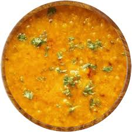

Dahl

Description
Dahl is lentils soup
As most of our dishes that goes with rice dry, dahl comes in as a soup to add to the meal
Ingredients
- Lentils
- Garlic
- Chilli
- salt
- Oil
- Tomato
How to cook
- Heat a little oil in the pan
- Add 1 chopped chilli, garlic and fry until brown
- Add lentils and add water
- Once lentil has softed and water has become thick, add little tumeric and half a tomato
- Once the consistency is thick and tomato has dissolved, its time to serve
Home